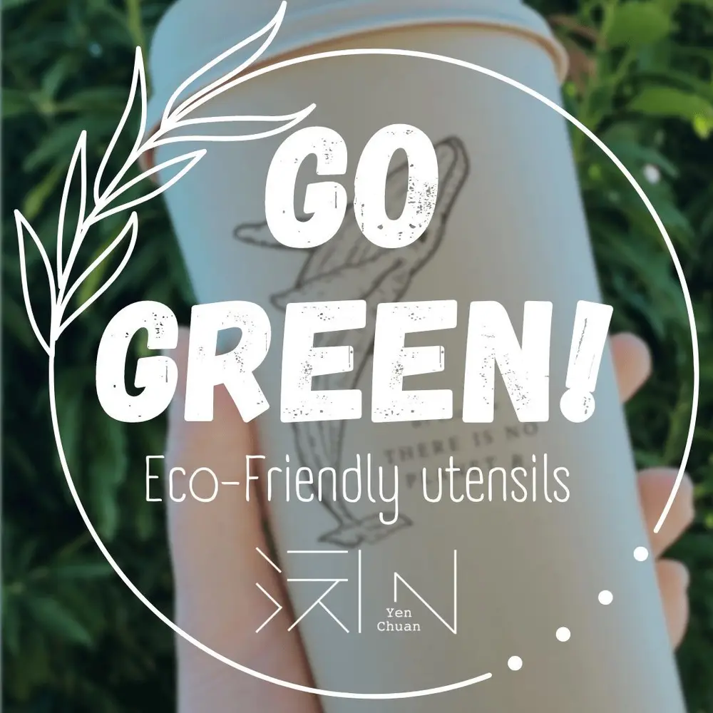
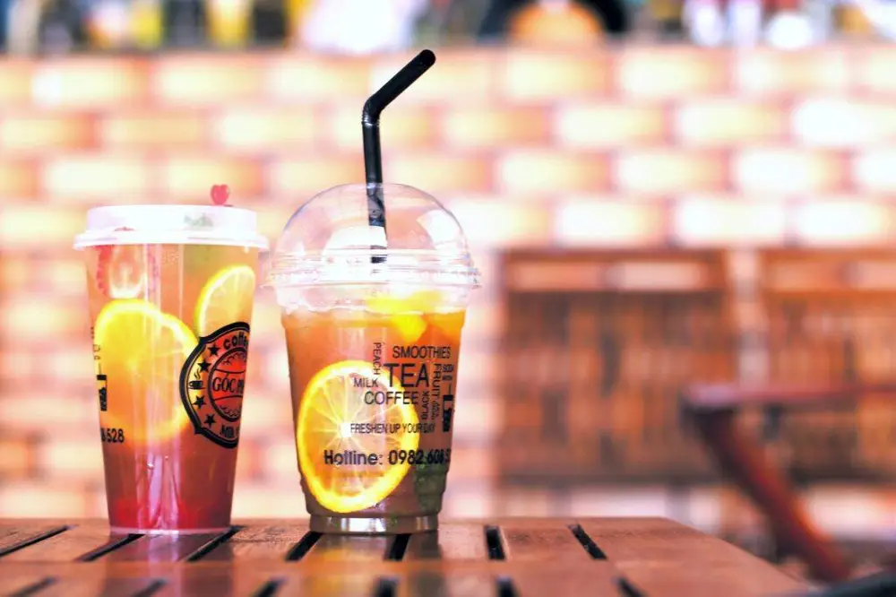
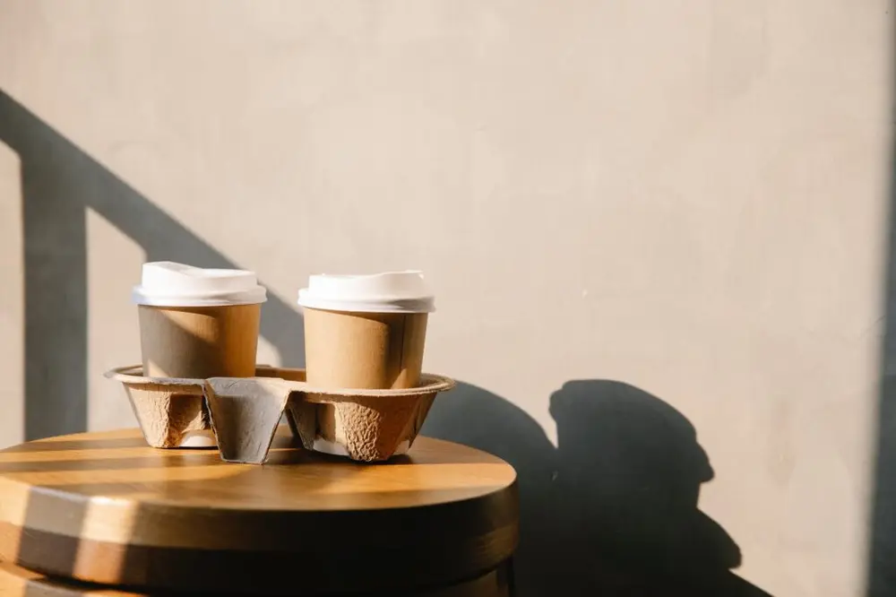
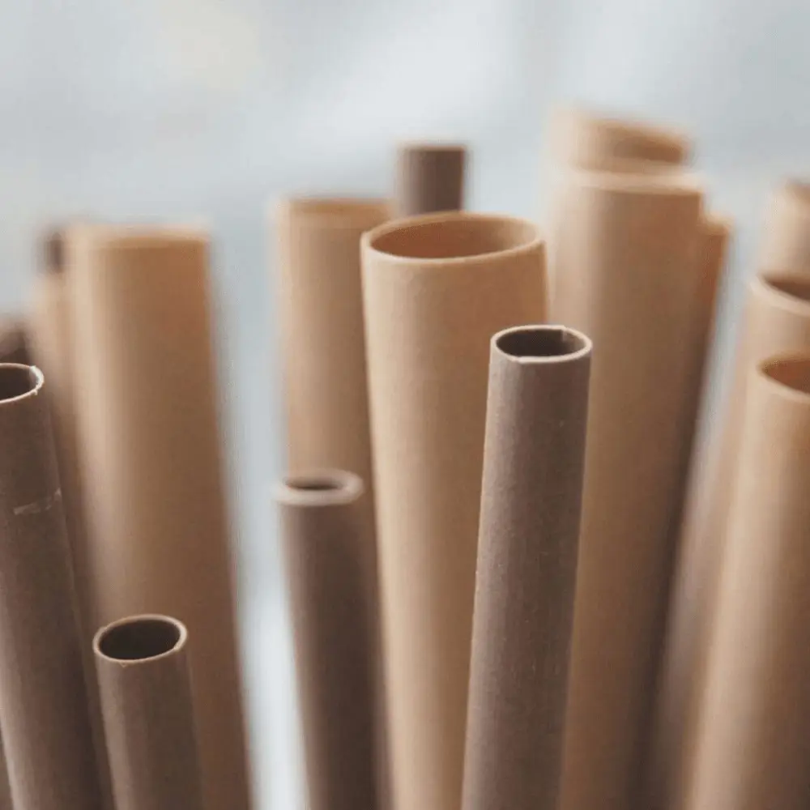
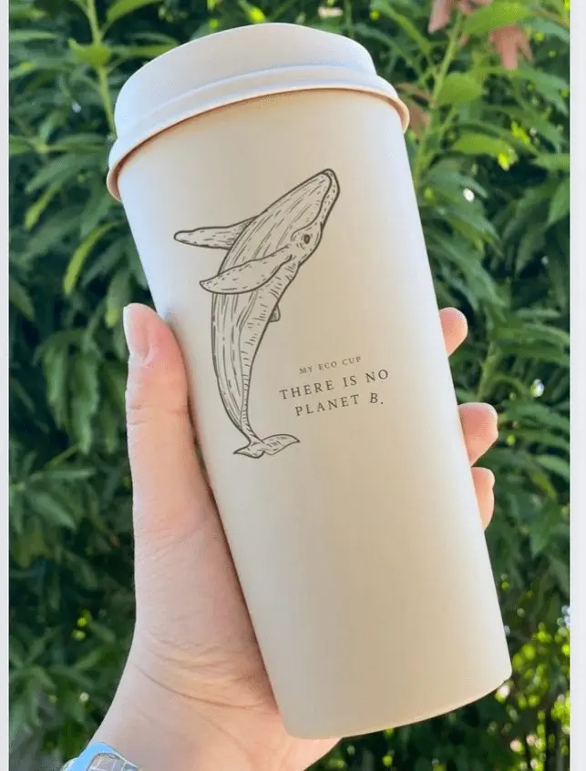
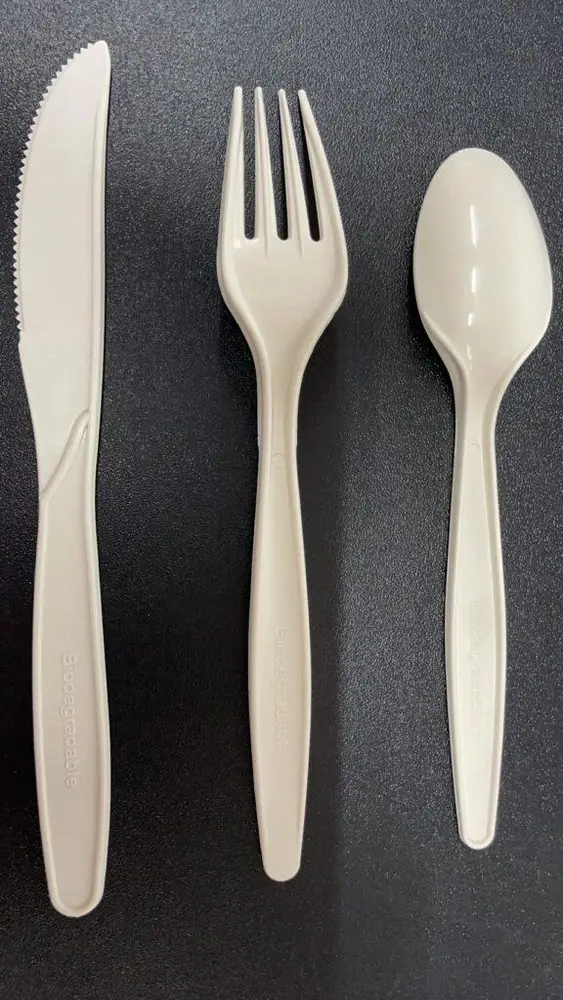

文章 / 飲品配方與資訊
Save the planet together with eco-friendly packaging!
這篇是英文原文，尚未完成繁體中文翻譯。中文選單與相關商品連結不會切回英文介面。

查看英文原文（尚未翻譯）
Go Green with Eco-friendly items!
As Global Warming continues to worsen over the years, many countries began to limit or ban the usage of single-use plastic food containers in favour of eco-friendly alternatives. For example, the EU and UK have placed bans on such containers, and both Canada and Taiwan have plans to phase them out in the future.
Trying to find more eco-friendly solutions for your cups, straws and other utensils? We got you covered!

Material matters
When looking for suitable eco-friendly materials, it’s important to compare their properties and see whether they are suitable for making the items you need.
Some common materials include PLA and paper, but there are shortcomings that limit their use:

Why not PLA?
PLA is one of the most commonly-used “bioplastic”, made from lactic acid derived from plant starches. It’s also biodegradable as well. Should be a great alternative for plastic, right?
Not quite.
PLA is biodegradable under industrial composting conditions. However, it still takes at least 2 months to do so. In other conditions, PLA takes much longer to decompose, reaching lengths comparable to regular plastics.

Why not paper?
Paper is probably the material that comes into mind when we talk about eco-friendly material. Although it’s widely-used and cost-effective to boot, its main drawback is its lack of water-resistance.
While it’s possible to apply a waterproof layer to the paper, with long-term soaking (eg. straws in a drink) the paper can still turn soggy. The ingredients used in the layer also raises questions about possible health issues.
Our new improved eco-friendly materials!
With our ESG/SDGS-certified plant-fibre materials, we can resolve the above issues easily!
Here’s what we can offer:

Tea fibre straws
Made with leftover locally-sourced tea stems after producing tea leaves, tea-fibre material can decompose in soil without any plastic residue!
Unlike paper straws, these straws do not get soggy easily. They’re also tougher than other plant fibres – no need to worry about accidentally breaking your straws!

Tea fibre reusable cups
The cups are made of tea fibres and PBS materials, which can decompose fully in soil.
They are heat-resistant, non-toxic and leakproof, guaranteeing up to 1 year of use! At 660ml per cup, they are perfect for bringing your daily cuppa to work.
Want to market your brand? We can print your logo on the cups!

Bamboo fibre utensils
Made with natural bamboo fibre, these utensils also fully biodegrade in soil.
With a high heat-resistance up to 100 degrees C, bamboo fibres are perfect for making cutlery, cups, straws and other items

PBS utensils
Polybutylene succinate (PBS for short) is a biodegradable plastic that degrades into water and carbon dioxide naturally in soil.
Thanks to its higher resistance to heat compared to other bioplastics, it’s a great alternative material for single-use utensils!
Ready to join the Green Revolution?
Contact us to learn more about our eco-friendly products!